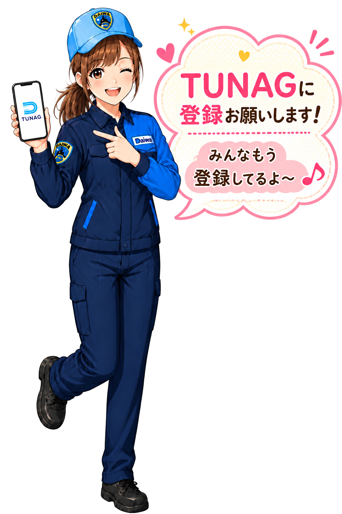

組合員専用アプリ
TUNAGに
登録しよう！
組合がもっと身近になる。
お知らせも、各種申請も、福利厚生もスマホから。
TUNAGに登録お願いしま〜す！
みんな登録してね〜♪

TUNAGアプリをダウンロード
登録はかんたん！数分で完了
TUNAGに登録すると
こんなに便利！
組合情報がすぐ届く
組合からの大切なお知らせをスマホで確認できます。
いつでも確認できる
仕事の休憩時間や自宅など、好きな時間に確認できます。
慶弔見舞金を申請
結婚・出産などの慶弔見舞金をTUNAGから申請できます。
各種申請が便利に
これまで紙やFAXで行っていた手続きを順次TUNAGへ移行します。
お得な福利厚生
映画チケットや各種割引など「TUNAGベネフィット」を利用できます。
共済・最新情報
UAゼンセン共済やバリューフレンドシップなどの情報も確認できます。
大切なお知らせ
各種申請はTUNAGへ移行します
これまで郵送やFAXで受け付けていた一部の申請を、今後は順次TUNAGへ移行します。
- 申請が簡単
- 申請漏れを防止
- 組合本部へ確実に届く
- FAX・郵送コスト削減
- ペーパーレス化
今後、用紙による申請は廃止する方向です。
早めのTUNAG登録をお願いします。
慶弔見舞金も
TUNAGへ
出産祝金
ご家族が増えたときの出産祝金も、TUNAGから申請できます。
結婚祝金
ご結婚された際の結婚祝金も、TUNAGから申請できます。
仲間とのイベントにも
補助があります！
5人以上集まったらチェック！
組合員が5名以上集まってスポーツやイベント、親睦活動などを行った場合、「UAゼンセン行事共済厚生補助金」の対象になる場合があります。
サッカー
ボウリング
レクリエーション
親睦イベント
正式名称：UAゼンセン行事共済厚生補助金
QUOカードを
まだ受け取っていませんか？
今年1月に実施した「組合員意識調査」にご協力いただいた方への謝礼は、TUNAG登録後に受け取ることができます。まだ受け取っていない方は、登録後にTUNAGをご確認ください。
受け取り方法
- STEP 1 TUNAGのタイムラインを開く
- STEP 2 「組合本部からのお知らせ」を確認
- STEP 3 過去の投稿をさかのぼる
- STEP 4 4月1日投稿の「組合員意識調査謝礼のお受け取り方法について」を確認
TUNAG登録は
かんたん2ステップ！
STEP 1
TUNAGアプリをダウンロード
STEP 2
IDと初期パスワードを入力
ID
tunag2649-Dru社員番号
初期パスワード
Dru社員番号
ログインできたら登録完了です。
ログイン後、TUNAG上でご自身のパスワードを再設定してください。
登録完了！
これで組合からの最新情報や各種サービスをスマートフォンから利用できます。
登録ありがとうございます！
TUNAGで組合をもっと身近に♪